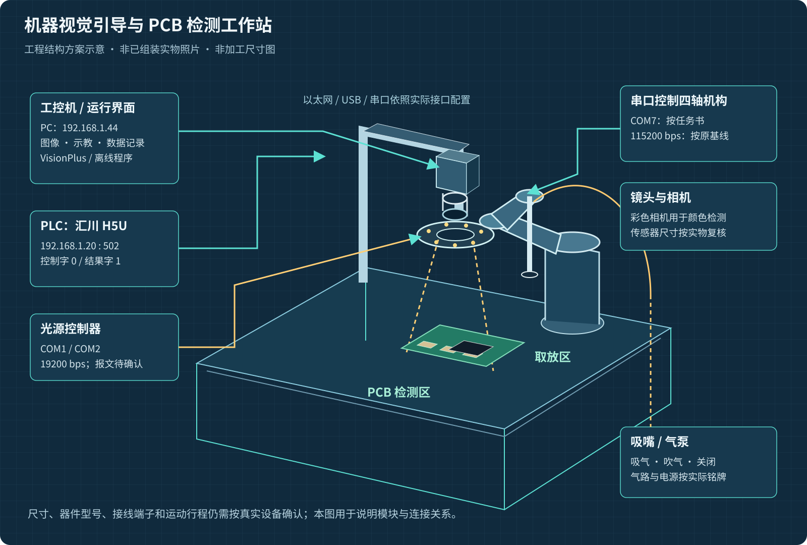
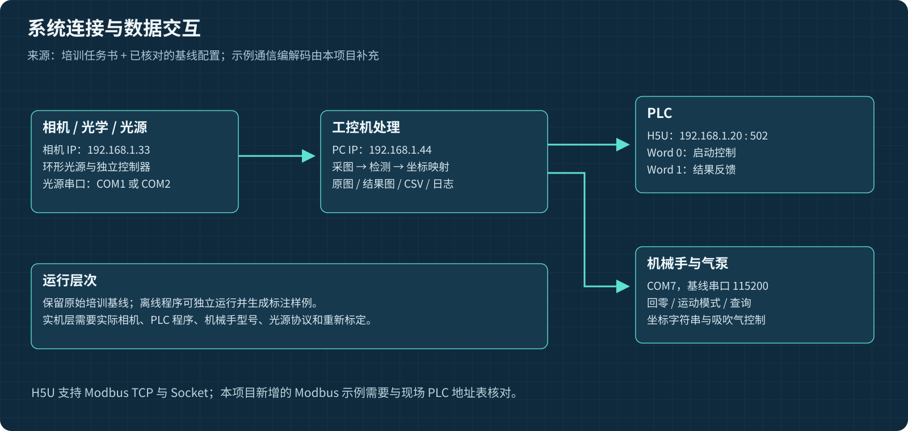
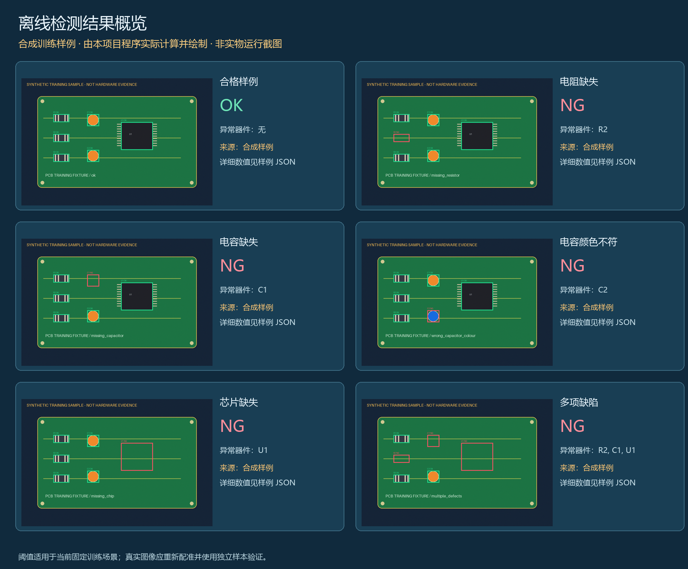
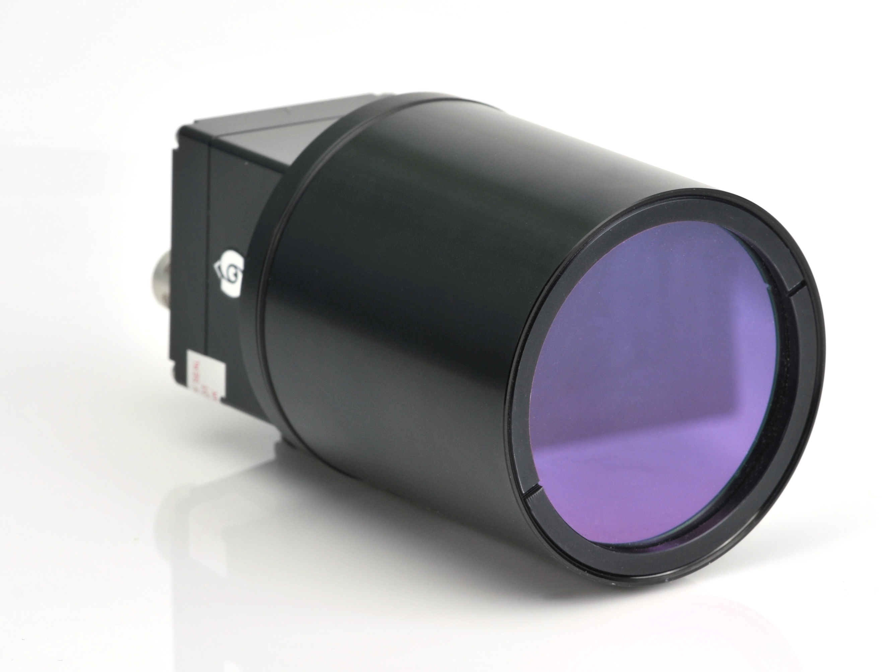
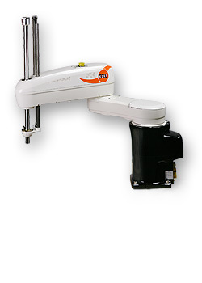

结构图为工程方案；外部照片和培训原图保留来源；合成样例明确标注。新增程序已做软件检查，实际设备联调与真实图像性能仍待验证。
工作站结构方案

非已组装实物照片，非加工尺寸图；模块关系依据任务书。
程序实际生成的离线结果

六个合成案例，按真实执行的检测计算生成；不代表现场精度或实机截图。器件外形参考

Alexander Lucke / Wikimedia Commons，CC BY-SA 3.0；非作者实物、非已选型号。
Jo Teichmann / KUKA，原页公有领域；非当前培训机械手或作者实物。